Gameplay
Real captures from the game: hundreds of monsters at once, skills that cast themselves.
Two modes
Pick one on the title screen: Play starts a Survivors run, Campaign opens your saved characters.
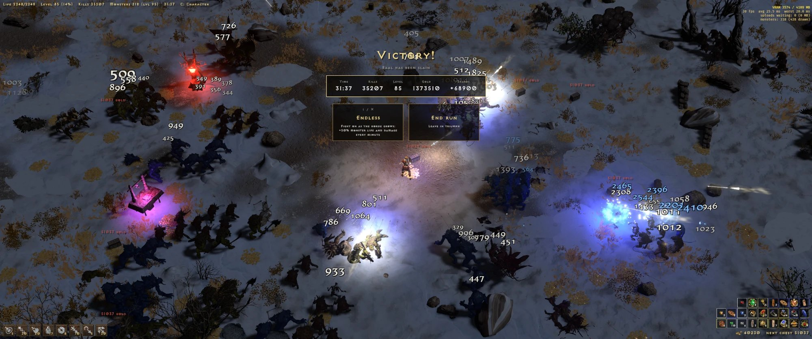
Survivors
A run from Act I to Baal against hundreds of monsters at once. Your skills cast themselves; you walk, pick level-up cards and spend gold on chests. Shards from each run buy talents, and boss drops go to the Armory.
Runs take minutes. Nothing carries over except talents, shards and the Armory.

Campaign
A faster Diablo II. Make a character and play through five acts with towns, D2's people, waypoints and act bosses, then Nightmare and Hell. Real D2 items, stat and skill points, the skill tree, runewords and the Cow Level.
Saved characters, softcore or hardcore. Skills cast themselves, or pick Classic casting when you make the character.
Survivors mode
A full survivors run, built out of Diablo II's own pieces.
Auto-casting skills
Frozen Orb, Blessed Hammer, Bone Spear, Tornado, Whirlwind and 100+ more fire by themselves.
Level-up cards
Each level deals three cards: learn a skill, raise one, or take a passive. The run stands still while you pick. The best card is marked Recommended, and Space takes it.
Gold, chests, shrines
Gold opens chests that deal run items: charms, jewels, uniques. D2's shrines give short power-ups.
Super-uniques and bosses
Bishibosh, Rakanishu, Griswold and friends show up before each act's boss. Night falls when the boss comes.
Talents and the Armory
Shards earned in a run buy permanent talents per class. Bosses drop uniques and set items for the Armory; equip them between runs and see them on your hero's model.
Quests
Two side goals per act: slay a named monster, clear a den, gather, or hold a ring. Each pays out a reward hand.
Campaign mode
Diablo II's acts and items at a faster pace: no waves and no respawns, packs placed along the road, and a town in every act.
Towns and waypoints
Each act has a walled town with D2's people: Akara, Charsi, Gheed, Fara, Ormus, Malah and the rest. D2R's waypoints reach every act. Only the town is safe.
Normal, Nightmare, Hell
Act bosses leave a portal and can be farmed. Beating Baal opens Nightmare, then Hell, with D2's monster numbers and resist penalties.
Softcore and hardcore
Characters save on their own. In softcore, death sends you back to the act's town and costs some experience on Nightmare and Hell. A hardcore character has one life.
Real D2 items
Monsters drop from D2's treasure classes: magic, rare, set and unique items with real affixes, sockets and ethereal. Gems, runes and D2's runewords. Uniques and sets drop four times as often.
Inventory, stash and belt
A 10x8 inventory with a paperdoll and a 5x8 charm grid, a shared 10x10 stash and a potion belt on 1-4. Only charms in the grid count. Worn gear shows on your hero.
Stats and the skill tree
Each level gives 5 stat points and 1 skill point. The skill tree is your class's real three tabs, and quests pay D2's bonus skill points.
Vendors and gambling
Vendors sell D2's stock at D2's prices and buy back what you sold. Healers heal for free, smiths add sockets, Akara resets your points, and Gheed gambles.
Quests
Seven D2 quests, from the Den of Evil to the Rite of Passage. Some pay skill points; the others give a lasting bonus you pick, and can swap later at the quest giver.
Caves and lairs
A named pack guards each cave, with a rare or better item for clearing it. Andariel waits below the Catacombs, Duriel below Tal Rasha's Tomb, each with the act's last waypoint close by.
Item filter
Default, Strict, Custom or Off. Good drops get a border, a sound, a light beam and a map dot. L switches the
filter off; hold Alt to see hidden items. Custom reads itemfilter.txt.
Crafting orbs
Ten orbs that turn a white item magic or rare, reroll affixes or numbers, add an affix or a socket, or strip an item back to white. Click an orb, then the item.
Town portal and cows
P opens a town portal (no scrolls). After Baal, the Secret Cow Level: 1500 Hell Bovines and the Cow King, its loot carried to town, and a red portal in every town to go back.


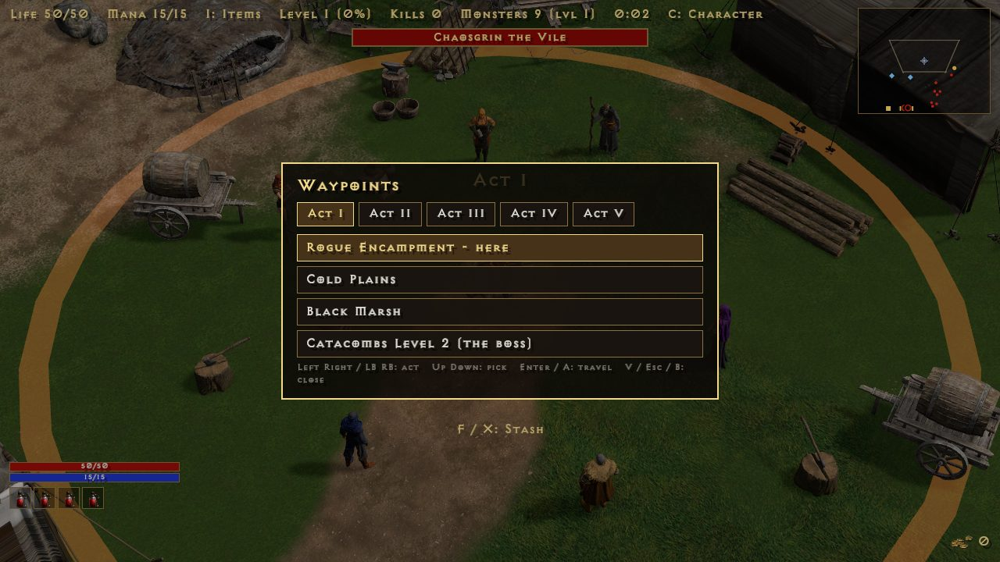


Eight classes
Every D2R class, Warlock included, each with builds from today's tier lists.
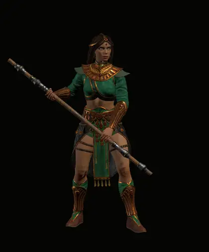
Sorceress
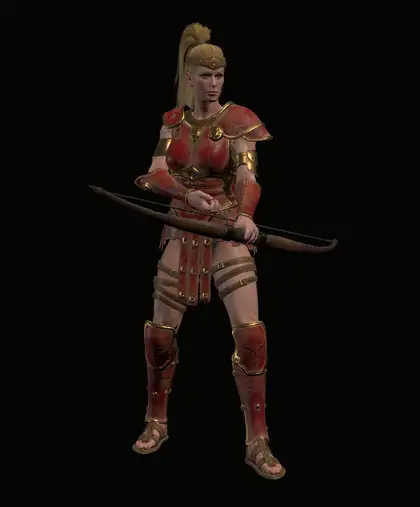
Amazon
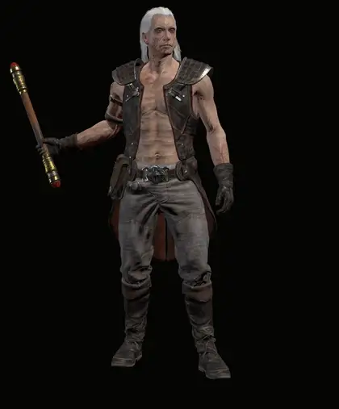
Necromancer
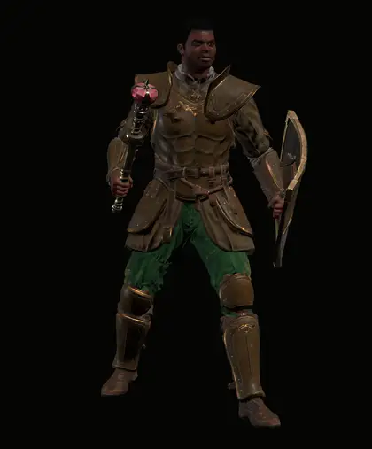
Paladin
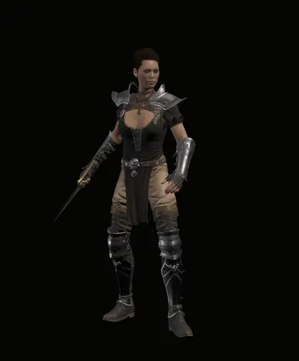
Assassin
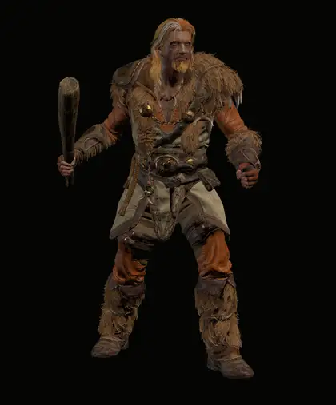
Druid
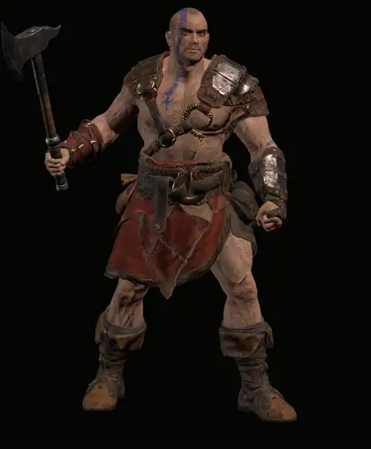
Barbarian
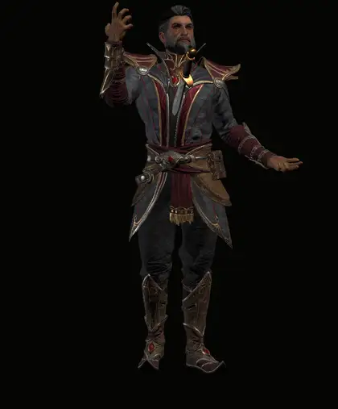
Warlock
Five acts
Each act has its own ground, props, music and monsters. In Survivors, Baal's victory screen leads to Endless; in Campaign, to the next difficulty and the Cow Level.
Screenshots
D2R's own 3D models, PopcornFX spell effects and shaders, loaded from your install.
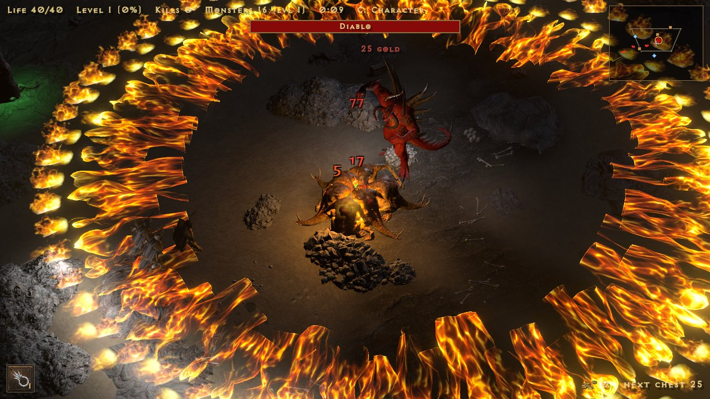
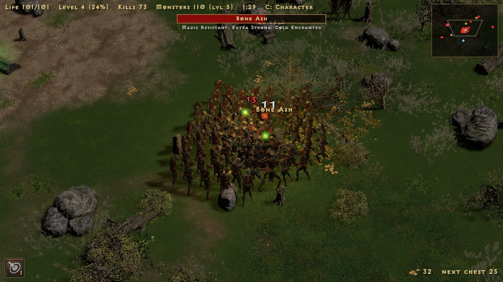
The launcher
Settings, updates and the Play button in one window.
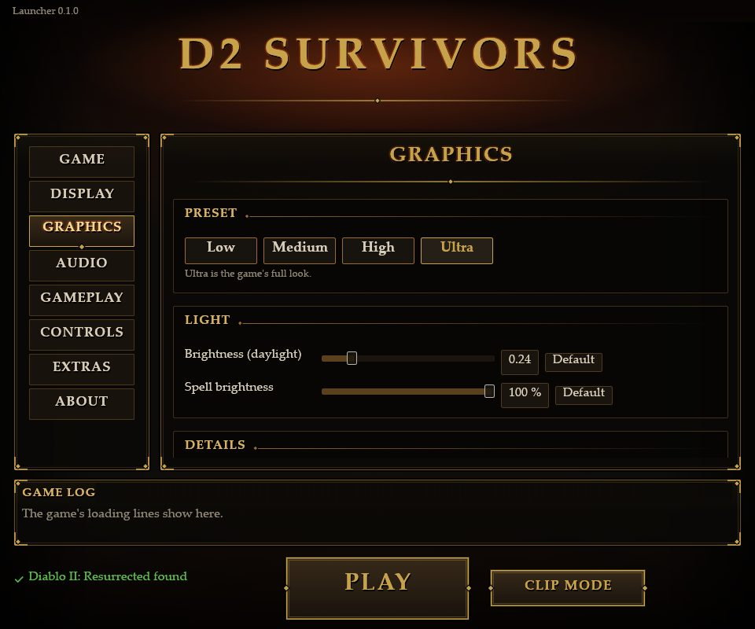
- Finds D2R by itself on Battle.net or Steam, or browse to it.
- Updates itself from this site's releases. It checks when it starts and every 10 minutes while open; Update downloads the new build, swaps the files and restarts. The game checks too, and Exit Game hands over to the launcher.
- A dark gothic look. With D2R installed it draws D2R's own frames and buttons, read from your install and never copied; without it, the drawn look shown here.
- Every setting in tabs: Game, Display, Graphics, Audio, Gameplay, Controls, Extras.
Get started
The game reads its art from your Diablo II: Resurrected install. It ships no Blizzard files and never starts D2R or Battle.net.
Download and unzip
Grab the zip above and unzip it anywhere (not inside D2R's folder).
Run the launcher
Start D2SurvivorsLauncher.exe. It finds D2R on Battle.net or Steam by itself.
Press Play
Play starts a Survivors run; Campaign opens your characters. Press H in the game for the Guide and its controls, or see the controls page. Gamepads work too.
D2R not found? Run
check_d2r.bat and send the d2r_check.txt it writes.Updating: the launcher does it (or unzip the new build over your old folder). Campaign characters live in the
saves folder next to the game; updates never touch them, and settings, shards, talents and the Armory are kept too.
Updates and fixes
What changed in each build, newest first.
- FIXMonsters no longer leave floating blood smears (hit flashes and boss deaths stay).
- NEWSteam's D2R works: the game reads Steam's own storage format and finds Steam installs on any drive.
- NEW
check_d2r.batchecks the game can read your D2R and writesd2r_check.txt.
- FIXDiablo casts all his skills properly: Red Lightning Hose, cold, fire nova ring, fire wall, bone prison, each with its D2R animation, effect and sound.
- NEWDamage numbers on/off in Esc > Options, or N during play.
- NEW
README.txtfor players in the zip.
- PERFDusk and dawn no longer stall the game; the act change loads more smoothly.
- FIXPause menu and card screens hold still (no sideways skipping) and pause sounds.
- NEWMelee rework: every melee skill auto-swings and hits everything in its arc, line or ring. 26 new melee skills.
- NEWNew builds: Spearazon, Zealot, Phoenix Strike, Kicksin, Fury Druid, Frenzy Barb, Cleave Warlock.
- NEWDamage numbers, a minimap (Tab / LB) and the spell review (
spells.bat). - PERFFaster big fights (particles built on all cores), VSync without tearing.
- PERFMuch less video memory (act 2 about 2.1 GB, was over 3) with no quality change.
- NEWF3 performance overlay and
perf.log. - FIXFirestorm, Nova, Lightning, Fire Wall, Ice Blast and arrow visuals; all 8 class cards fit on screen.